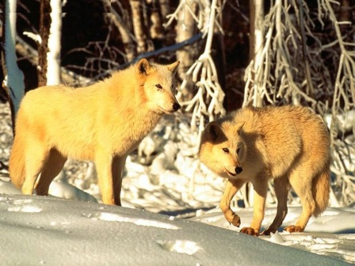
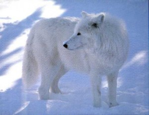

Lobo ártico
Descripción
Ningún lobo tiene el color del lobo ártico debido a la ubicación en donde se encuentra. Esta sub especie del lobo gris generalmente es de color blanco, aunque algunos son amarillos y otros poseen colores grises y negros en algunas partes del cuerpo.
El tamaño de estos animales dependerá del lugar en donde vivan. Algunos tienen un peso de sólo 100 libras, sin embargo otros pueden llegar a pesar hasta 175 libras, algunos lobos articos miden hasta tres pies cuando están bien desarrollados, mientras otros poseen una longitud de alrededor de 6 pies.
Anatomía
El lobo ártico vive en lugares donde el frío es extremo, y debido a esto posee dos capas gruesas de piel que lo protegen de las bajas temperaturas. La capa externa de piel se hace más gruesa cuando está llegando el tiempo de invierno. Esta capa ayuda a formar una barrera impermeable en su piel, ayudándoles a mantener la temperatura corporal incluso cuando hace bastante frío.
Las orejas de estos lobos son más pequeñas que las de otras especies, una forma de mantener el calor, que de manera general les ayuda a regular su temperatura corporal. El suelo está lleno de nieve y permanente congelado casi todo el año, por lo que estos animales poseen patas acolchadas diseñadas para ofrecerles un buen agarre cuando caminan.
Evolución
La evolución de los lobos árticos continúa siendo objeto de debate entre los expertos, se cree que evolucionaron de otros caninos hace mas de 50 millones de años, y debido a la Edad de Hielo estos lobos terminaron en esta región tan fría.
Estos animales fueron capaces de desarrollar una anatomía que les permitió adaptarse a temperaturas extremadamente frías. También aprendieron a sobrevivir con cantidades de grasas almacenada en el cuerpo.
Conducta
Algunos creen que el lobo ártico es solitario por naturaleza, pero no es cierto. Los que se ven en la naturaleza lejos de las manadas es porque están buscando alimentos o buscando hacer su propia manada. El tamaño de estos grupos puede ser desde dos hasta veinte lobos, generalmente, el tamaño de una manada de lobos árticos dependerá de la cantidad de alimentos que tengan disponibles.
Los lobos árticos resultan ser muy territoriales. Sin embargo, la mayoría de estos animales necesitan cientos de kilómetros que cubren dentro de su hábitat, esto ha traído como resultado que grupos distintos se superpongan, este caso los lobos de ambos grupos marcan sus territorios con orine y con los olores que desprenden de sus cuerpos.
Hábitat/Distribucción
Alaska es el lugar donde se encuentran la mayoría de los lobos árticos salvajes. En este lugar son capaces de caminar sobre el suelo helado debido a la forma en que están diseñados sus pies, este diseño les permite equilibrar su peso para mantener un buen agarre sin hundirse. Estos animales son adaptables a diferentes temperaturas, tanto frías como calientes.
Groenlandia y Canadá también tienen lobos árticos, sin embargo, el número de ellos en estas áreas es extremadamente bajo, ya que en el mejor de los casos se han trasladado a otros lugares en busca de alimentos, o han muerto porque le faltan los alimentos para poder sobrevivir. En los alrededores de Alaska, el hábitat natural de estos lobos permanece intocable debido a que la tierra es demasiado fría y las personas no tienen mucho acceso.
Dieta / Alimentación
La ubicación de los lobos árticos es limitada en lo que respecta al suministro de alimentos. Por lo general van a alimentarse del caribú y el buey almizclero. Como estos animales son mucho más grandes que los lobos, los van a cazar en grupos. Los lobos son grandes cazadores y sus presas cuando las están atacando desde todos los lugares no pueden huir.
Los lobos árticos tienen dientes muy afilados, y sus mandíbulas son grandes. Son capaces de extraer la carne y triturar los huesos de los animales que capturan. Estos animales se pueden comer más de 20 libras de carne de una vez.
Cuando cazan una presa grande tienen alimentos durante varios días, y les ofrecen a todos los miembros de la manada, en estos lugares debido al frío que hace los alimentos se conservan, otras veces que se pasan semanas comiendo poco porque no encuentran suficientes alimentos. Estos animales se mueven en dependencia de cómo se muevan sus presas, si no, no tienen la posibilidad de encontrar comida.
A los cachorros que no son suficientemente grandes para cazar pero necesitan carne para ponerse fuertes, los demás miembros de la manada les ofrecerán la carne regurgitada que han parcialmente consumido.
Reproducción
Como la mayoría de las especies de lobos, sólo se aparearán el macho alfa y la hembra beta. Esta es la razón por la que los cachorros, cuando tienen cerca de dos años de edad salen a cazar por su cuenta. El impulso de hacer sus propios grupos y en un futuro ser capaces de reproducirse es común entre los cachorros de lobos.
Las crías nacen cerca de dos meses después del apareamiento. Aproximadamente un mes después de apareamiento la hembra comenzará a buscar un lugar donde pueda dar a luz, y excavará en las capas de hielo, a veces esto resulta difícil, pero siempre logra encontrar un lugar donde dar a luz.
Resulta importante que la madre tenga un lugar seguro para los jóvenes cuando están a punto de nacer. Puede cuidar doce cachorros a la misma vez. Cuando la madre da a luz, los pequeños cachorritos pesan alrededor de una libra, son ciegos y sordos, y se basan en el sentido del olfato para sobrevivir en los dos primeros dos meses de vida.
La madre tendrá que salir a buscar su comida para producir la leche que necesitan los cachorros para sobrevivir, en este momento los cachorros se quedan solos y pueden ser muy vulnerables. Cuando los cachorros tienen aproximadamente tres meses de edad se unirán al resto de la manada. La manada completa va a hacer todo lo posible para ayudar a asegurar que estos jóvenes lobos sean capaces de sobrevivir.
Depredadores
El lobo ártico vive en zonas aisladas, y esto hace que no tengan problemas con los depredadores. A veces los lobos jóvenes pueden ser consumidos por otros animales, ya que cuando están cazando lejos de la manada, pueden convertirse en víctimas. De vez en cuando pueden ocurrir batallas entre las manadas por territorios, por alimentos, o por el apareamiento.